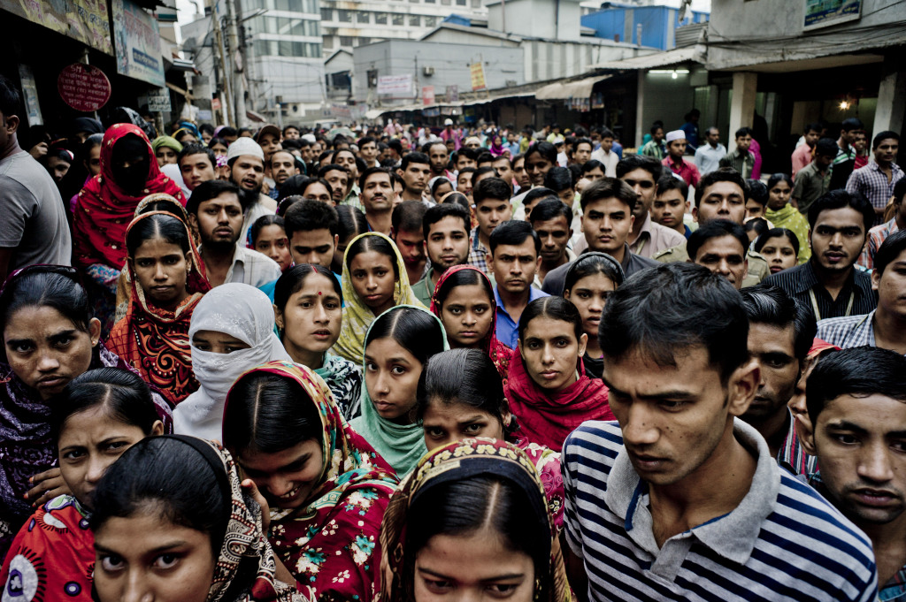
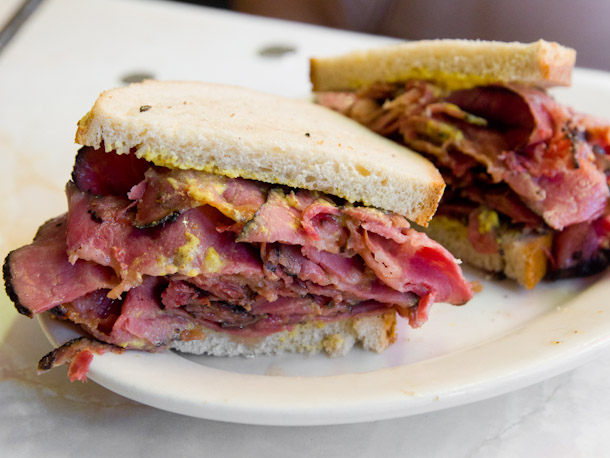
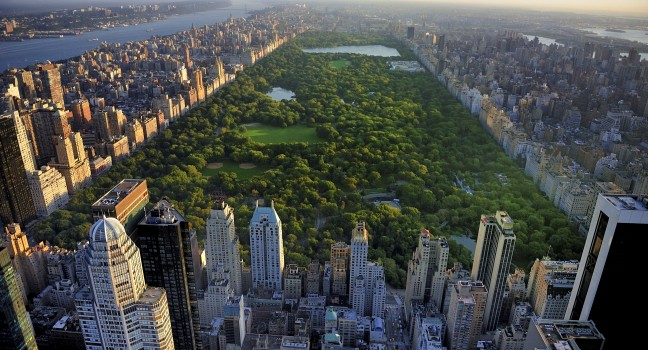

New York - turističke informacije
-
-
O New York-u
New York City (NYC) je najveći grad u saveznoj državi New York u SAD-u, čiji je glavni grad Albany. Osim u državi New York, NYC je najmnogoljudniji grad u SAD-u s čak 8,550,405 stanovnika (popis stanovništva iz 2015. godine) i ekonomsko je čvorište države. NYC se nalazi na južnom dijelu države, a njegova površina iznosi 790 km2. Država New York smještena je na sjeveroistoku SAD-a i graniči s New Jersyjem i Pennsylvanijom na jugu, Connecticutom, Massachusettsom i Vermontom prema istoku. Također ima morsku granicu u Atlantskom oceanu s državom Rhode Island istočno od Long Islanda, kao i međunarodnu granicu s kanadskim provincijama Quebec na sjeveru i Ontario na zapadu i sjeveru. Procjenjuje se da u državi New York živi 19,8 milijuna stanovnika (popis iz 2015. godine). U New Yorku se govori čak 800 jezika što ga čini gradom sa najviše jezičnog podrijetla u svijetu. NYC je globalni grad, on vrši značajan utjecaj na trgovinu, financije, medije, umjetnost, modu, istraživanja, tehnologije, obrazovanje i zabavu. Pojam New York Minute definira njegov brzi tempo. NYC je i sjedište Ujedinjenih naroda te je kao takav vrlo važan kao središte međunarodne diplomacije. Financijsko središte New Yorka koje zapravo funkcionira kao financijsko središte cijelog svijeta, usidreno je na Wall Streetu u donjem dijelu Manhattana i dom je Newyorške burze - najveće burze svijeta. NYC godišnje posjeti oko 50 milijuna turista pa su tako njegove znamenitosti dobro poznate međunarodnim i domaćim posjetiteljima - od 10 svjetskih najposjećenijih turističkih atrakcija, u New Yorku se nalaze čak četiri u 2013. godini: Times Square, Central Park, Niagara Falls (na granici s Ontariom) te Grand Central Terminal. U New Yorku se osim tih znamenitosti, nalazi i Kip slobode - simbol SAD-a i njegovih ideala slobode i demokracije. U 21. stoljeću, NYC je postao globalni čvor kreativnosti i poduzetništva, društvene tolerancije i očuvanja okoliša. Times Square, koji se naziva i "svjetskim raskrižjem", vedro je i osvijetljeno središte kazališta na Broadwayu i jedno je od najprometnijih raskrižja za pješake na svijetu te je glavni centar svjetske industrije zabave. Mreža visokog obrazovanja u New Yorku obuhvaća oko 200 sveučilita, uključujući Columbia University, Cornell University, New York University i Rockefeller University koji su uvršteni među 35 najboljih sveučilišta na svijetu. NYC se sastoji od 5 kvartova, od kojih je svaki zasebna županija države New York, a to su: Brooklyn s 2,504,700 stanovnika, Queens s 2,230,722 stanovnika, Manhattan s 1,585,873 stanovnika, Bronx s 1,385,108 stanovnika i Staten Island s 468,730 stanovnika. 1898. godine, ti su kvartovi ujedinjeni u jedan grad. Nekretnine na Manhattanu su među najskupljima u cijelom svijetu. U kineskoj četvrti na Manhattanu živi najviše Kineza u cijeloj zapadnoj hemisferi. Grad se nalazi u zoni umjerene klime prosječna godišnja temperatura u gradu je 12,5 stupnjeva Celzijusovih, a godišnja količina oborina prosječno iznosi 1,071 mm. Najtopliji mjesec je srpanj s prosječnih 24,7 stupnjeva, a najhladniji siječanj s -0,4°C.
-
Povijest New Yorka
17. stoljeće
Na južnom dijelu otoka Manhattan 1615. godine Nizozemska istočnoindijska kompanija osnovala je svoju kolonijalnu postaju. Trgovina krznima s Indijancima pokazala se iznimno unosnom pa je 1621. godine utemeljena Nizozemska zapadnoindijska kompanija. Godine 1625. ovdje se naselilo tridesetak valonskih obitelji, a naselje je dobilo ime Novi Amsterdam i postalo glavnim gradom kolonije Nove Nizozemske. U novoutemeljenom naselju je vladao gotovo potpuni kaos jer je pod upravom guvernera uvelike porastao kriminal. Godine 1647. Nizozemska zapadnoindijska kompanija odlučila je u koloniji uspostaviti red i povjerila je taj zadatak Peteru Minuitu. Tijekom njegova sedamnaestogodišnjeg mandata na mjestu guvernera, izgrađena je prva bolnica, zatvor i škola. Za zaštitu kolonije je izgrađen na njezinom južnom rubu obrambeni zid koji je kasnije porušen, ali je ostavio tragu imenu ulice koja danas prolazi tim mjestom - Wall Street. 1664. godine, grad je osvojila Engleska i u čast kraljevog brata, vojvode Yorka, preimenovala ga u New York. 1673., tijekom trećeg englesko-nizozemskog rata, nizozemski kapetan Anthonio Colve zauzeo je grad i preimenovao ga u New Orange u čast Vilima III. Oranskog, ali su na kraju rata Nizozemci bili prisiljeni vratiti kontrolu nad gradom Englezima.
18. stoljeće
Godine 1776. tijekom Američkog rata za neovisnost, u gradu se kratko vrijeme vratio stožer Georgea Washingtona. Nešto kasnije su ga zauzeli Britanci, pod čijom je vlašću bio sve do 1783. i britanskog priznanja američke neovisnosti. Od 1788. do 1790., New York je bio glavni grad SAD-a, a George Washington je ovdje 1789. prisegnuo kao prvi predsjednik. U gospodarski teškom poslijeratnom razdoblju, utemeljena je 1792. Njujorška burza.
19. stoljeće
Početkom 19. stoljeća grad sve brže raste, tako da 1811. gradski urbanisti odlučuju cijeli Manhattan koji je tada bio izgrađen samo na svom južnom kraju, prekriti pravokutnom mrežom ulica. Jedina je iznimka bio i ostao čuveni Broadway. Prekretnica u povijesti grada bila je izgradnja kanala Erie 1825. godine. Njime je New York povezan sa sjevernoameričkim Velikim jezerima, a time i sa Srednjim zapadom i preko noći se pretvorio u najveću luku američke istočne obale. Sredinom 19. stoljeća započelo se s planiranjem velikog gradskog parka, nazvanog Central Park. Radovi su započeli 1858. i uglavnom su završeni do 1866. U drugoj polovici 19. stoljeća stalno raste i broj useljenika, Iraca, Talijana, Nijemaca, Hrvata i drugih koji dolaze u nadi za boljim životom. Međutim, većina ih puno godina ostaje u sirotinjskim četvrtima poput Five Pointsa ili Boweryja. Razmirice među doseljenicima povremeno prerastaju u nasilne sukobe, primjerice u pobuni oko novačenja, najgorim nemirima u povijesti grada. Snažan rast uvjetovao je i promjene u upravljanju gradom: godine 1898. pet se kvartova - Manhattan, Queens, Brooklyn, Bronx i Staten Island - dogovorno ujedinjuju u Veliki New York. Bronx je djelomice pripadao gradskom području New Yorka već od 1874. godine, a Brooklyn je do ujedinjenja bio jedan od najvećih gradova u SAD-u. Ovih pet kvartova imaju danas i određeni stupanj samouprave, a njihovi stanovnici sjećaju pripadnost svom dijelu grada, često povezanu s etničkim podrijetlom.
20. stoljeće
 U prvoj polovici 20. stoljeća grad je postao svjetsko industrijsko i trgovačko središte. Veliki burzovni bum tijekom dvadesetih godina naglo je završio krahom burze na "crni utorak", 24. listopada 1929. godine. Gospodarska kriza tridesetih godina teško je pogodila New York, a nesposobna i korumpirana gradska uprava pod vodstvom gradonačelnika Jimmyja Walkera nije se, unatoč velikom zaduživanju, mogla nositi s problemima. Stopa nezaposlenosti prešla je 25%, a ljudi su gubili ne samo radna mjesta nego i stanove pa su širom grada iznikla naselja straćara. Prekretnica je bio izbor gradonačelnika Fiorella LaGuardije koji je pokrenuo programe pomoći i javnih radova. U ovom su razdoblju izgrađeni i neki od poznatih newyorških nebodera kao npr. Empire State Building i Chrysler Building.
Poslije Drugog svjetskog rata i kratkog razdoblja optimizma, stvari su opet ubrzo krenule nizbrdo. Pripadnici srednje klase iseljavali su iz predgrađa, a i industrija je napuštala grad. Tijekom 1960-ih New York su, kao i mnoge druge američke gradove, potresali razni nemiri. U 70-ima je došlo do eksplozije kriminala, a 1975. je zbog loše fiskalne politike grad morao proglasiti stečaj. Gradonačelnik Edward I. Koch uspio je za vrijeme svog mandata (1978.-1989.) sanirati gradske financije. Wall Street je tijekom gospodarskog uzleta u 80-ima povratio vodeću ulogu u financijskom svijetu. Novi newyorški gradonačelnik Rudolph Giuliani je 1990-ih politikom nulte tolerancije i jačanja policijskih snaga uspio drastično smanjiti stopu kriminala i vratiti gradu auru poželjnog mjesta za život.
U prvoj polovici 20. stoljeća grad je postao svjetsko industrijsko i trgovačko središte. Veliki burzovni bum tijekom dvadesetih godina naglo je završio krahom burze na "crni utorak", 24. listopada 1929. godine. Gospodarska kriza tridesetih godina teško je pogodila New York, a nesposobna i korumpirana gradska uprava pod vodstvom gradonačelnika Jimmyja Walkera nije se, unatoč velikom zaduživanju, mogla nositi s problemima. Stopa nezaposlenosti prešla je 25%, a ljudi su gubili ne samo radna mjesta nego i stanove pa su širom grada iznikla naselja straćara. Prekretnica je bio izbor gradonačelnika Fiorella LaGuardije koji je pokrenuo programe pomoći i javnih radova. U ovom su razdoblju izgrađeni i neki od poznatih newyorških nebodera kao npr. Empire State Building i Chrysler Building.
Poslije Drugog svjetskog rata i kratkog razdoblja optimizma, stvari su opet ubrzo krenule nizbrdo. Pripadnici srednje klase iseljavali su iz predgrađa, a i industrija je napuštala grad. Tijekom 1960-ih New York su, kao i mnoge druge američke gradove, potresali razni nemiri. U 70-ima je došlo do eksplozije kriminala, a 1975. je zbog loše fiskalne politike grad morao proglasiti stečaj. Gradonačelnik Edward I. Koch uspio je za vrijeme svog mandata (1978.-1989.) sanirati gradske financije. Wall Street je tijekom gospodarskog uzleta u 80-ima povratio vodeću ulogu u financijskom svijetu. Novi newyorški gradonačelnik Rudolph Giuliani je 1990-ih politikom nulte tolerancije i jačanja policijskih snaga uspio drastično smanjiti stopu kriminala i vratiti gradu auru poželjnog mjesta za život.
21. stoljeće
U kasno ljeto 2001. New York je doživio svoj najcrniji dan. Najviši gradski neboderi, blizanci World Trade Centera srušeni su u terorističkim napadima 11. rujna 2001. godine. Na mjestu srušenih nebodera, predviđena je izgradnja "Tornja slobode" (Freedom Tower) koji će ujediniti poslovne funkcije sa spomenikom za oko 2800 poginulih. Veliki nestanak struje na sjeveroistoku SAD-a 14. kolovoza 2003. pogodio je i New York. U gradu je održana konvencija Republikanske stranke prije predsjedničkih izbora.
-
Demografija
Rast populacije
Na području obuhvaćenom administrativnim granicama grada New Yorka živi oko 8,1 milijuna ljudi, a cijela gradska aglomeracija ima 22,3 milijuna ljudi. Broj se stanovnika od početka 20. stoljeća udvostručio. Od 1825. grad je zbog svojeg položaja na Atlantiku i plovnom putu rijeke Hudson, bio ulazno mjesto za imigrante iz cijelog svijeta. Daljnjim razvojem postao je najveći industrijski centar i financijska metropola. Raspored stanovništva uvjetovan je socioekonomskom klasom. Pripadnici viših klasa žive uglavnom podalje od gradskog središta i u skupljim dijelovima Manhattana. Imovinski slabiji stanovnici često unajmljuju stanove u derutnim zgradama koje njihovi vlasnici više ne obnavljaju (slumovi). Za New York je značajan i velik broj četvrti naseljenih gotovo isključivo određene etničke, rasne ili vjerske pripadnosti (China Town, Little Italy, Harlem i druge). Sljedeći pregled pokazuje broj stanovnika New Yorka u granicama današnjeg gradskog područja. Podaci do 1775. su procjene, od 1790. do 2015. su rezultati popisa stanovništva.
Rase i narodi
U 2010. godini od stanovništva 44% pripadalo je bijeloj rasi, 25,5% crnoj, 12,7% žutoj, a 0,7% je bilo indijanskog podrijetla. Azijati čine najbrže rastući segment gradskog stanovništva od 2000. godine. Tijekom svoje povijesti, grad je bio jedna od glavnih luka za ulazak imigranata u SAD. Više od 12 milijuna europskih useljenika pristiglo je na Ellis Island između 1892. i 1924. godine. Pojam „melting pot“ skovan je kako bi se opisala gustoća naseljenosti imigrantima četvrti u Lower East Sideu Manhattana. Do 1900. godine, Nijemci su činili najveće imigrantske skupine, nakon čega slijede Irci, Židovi i Talijani. Godine 1940., 92% stanovništva bilo je bijele rase. Oko 37% gradskog stanovništva su stranci. U New Yorku ne postoji nijedna zemlja ili regija podrijetla koja dominira među stanovništvom. Kršćanstvo (59%), koje se sastoji od rimokatolicizma (33%), protestantizma (23%) te od ostalih kršćana (3%) je u 2014. godini bilo pretežno najzastupljenija religija u New Yorku, a zatim, s oko 1,1 milijuna Židova u New Yorku kojih više od pola živi u Brooklynu. Islam je na trećem mjestu u New Yorku. Službene procjene se kreću između 600,000 i 1,000,000 muslimana. Iza toga slijede hinduizam, budizam i razne druge religije kao i ateizam. 2014. godine registrirano je čak 24% stanovnika New Yorka sa nedefiniranim religijskim opredjeljenjem.
Nacionalnosti
Kinezi u New Yorku
Gradsko područje New Yorka je dom najveće etničke skupine kineskog stanovništva izvan Azije. Ono čini najveću azijsku skupinu u SAD-u i najveću azijsku dijasporu u zapadnoj hemisferi. Ova populacija broji procijenjenih 819,527 Kineza u 2014. godini i uključuje najmanje 12 kineskih četvrti. 6 kineskih četvrti nalaze se u New Yorku i po jedna u Nassau County i Long Islandu od onih u državi New York. Kineska američka zajednica u gradskom području New Yorka ubrzano raste u populaciji, kao i u ekonomskom i političkom utjecaju.Indijci u New Yorku
Indijci u New Yorku metropolitanske regije predstavljaju jedan od najvećih i najbrže rastućih etničkih skupina u NYC-u. NYC je dom najvećeg dijela indijske populacije sa 679,173 stanovnika (popis 2014.). Indijsko stanovništvo azijatskog podrijetla predstavlja drugu po veličini azijsku zajednicu u New Yorku koja također brzo raste. Prema podacima također iz 2014. godine, u New Yorku ih živi 819,527 unutar gradskog područja.Korejci u New Yorku
Prema anketama Američke zajednice iz 2011. godine, u New Yorku živi preko 100,000 etničkih Korejaca s dvije trećine u okrugu kvarta Queensa. S druge strane, Greater New York Combined Statical Area prebrojava 218,764 korejskih američkih štićenika u SAD-u, što je brojem druga najveća populacija Korejaca izvan Koreje u svijetu.Filipinci u New Yorku
Filipinci u gradskom području New Yorka predstavljaju jednu od najbrže rastućih etničkih skupina u NYC-u, privučene masovnim stanovništvom tog područja i njegovim gospodarskim i kulturnim mogućnostima i ponudama. Do 2014. prema procjenama, na području NYC-Northen New Jersey-Long Islan, statistički je dom 262,357 američkih Filipinaca.Bangladešani u New Yorku
 Većina bangladeških Amerikanaca je iz Bengala. Stigli su u SAD u velikom broju od ranih 1970-ih i postali jedna od najbrže rastućih etničkih zajednica od tog desetljeća. Očekuje se da će ubrzano rasti u nadolazećim godinama, s obzirom na to da se iseljavanje iz Bangladeša u SAD nastavlja povećavati.Talijani u New Yorku
NYC ima najveću populaciju talijanskih Amerikanaca u SAD-u – on je dom treće najveće talijanske populacije izvan Italije iza Sao Paula (Brazil) i Buenos Airesa (Argentina). Najveći val talijanske imigracije u SAD dogodio se krajem 19. stoljeća i početkom 20. stoljeća. Između 1820. i 1978. godine, u SAD je imigriralo 5,3 milijuna Talijana. Samo Irci i Nijemci su se doselili u većem broju. -
Sport
New York City je sjedište Nacionalne Nogometne Lige, Major League Baseball, National Basketball Association, the National Hockey League i Major League Soccer. Gradsko područje New Yorka je domaćin najviše klubova iz ovih 5 profesionalnih liga. Grad je igrao kao domaćin sa više od 40 velikih profesionalnih timova u 5 sportova i njihovim pripadajućim ligama. Četiri od deset najskupljih stadiona na svijetu ikad izgrađenih su smješteni u gradskom području New Yorka, a to su MetLife Stadium, the New Yankee Stadium, Madison Square i Gardeni Citi Field. New York je opisan kao „Prijestolnica bejzbola“. Jedan je od samo pet gradova uz Los Angeles, Chicago, Baltimore-Washington i San Francisco koji ima 2 bejzbol tima. Trenutna dva tima su New York Mets koji igraju u Citi Fieldu u Queensu i New York Yankees koji igraju u Yankee Stadiumu u Bronxu. Yankeesi su osvojili rekordnih 27 prvenstava, dok su Metsi osvojili World Series dvaput. U gradu također postoje i male bejzbol lige – the Brooklyn Cyclones i Staten Island Yankees. Nacionalna košarkaška udruga grada su Brooklyn Nets i the New York Knicks te New York Liberty – ženska nacionalna košarkaška udruga. Prvo nacionalno prvenstvo na razini sveučilišta the National Invitation Tournament, osnovano je u New Yorku 1938. godine, a održava se još i danas. Grad je svjetski poznat po košarci, koju mladež igra u gotovo svakom lokalnom parku. U nogometu, New York predstavlja New York City FC koji igraju u Yankee Stadiumu. The New York Red Bulls igraju u Red Bull Areni blizu Harrisona, New Jersey. Povijesno gledano, grad je poznat po New York Cosmosu – najuspješnijem profesionalnom nogometnom timu u kojem je trenirao Pele. Nova verzija New York Cosmosa oformljena je 2010. godine, a počeli su igrati u drugoj ligi 2013. Cosmosi igraju na James M. Shuart Stadiumu na kampusu Hofstra Universityja, nedaleko od grada u Hemphsteadu, New York. Godišnje United States Open Tennis Championship je jedno od četiri svjetskih Grand Slam teniskih turnira, a održava se u Nacionalnomteniskom centru u Flushing Meadowsu-Corona Parku u Queensu. The New York Marathon je jedno od najvećih svjetskih događanja, kojeg je od 2004. do 2006. završilo čak 37,866 trkača. Box je također istaknuti dio gradske sportske scene, uz događanja poput Amature Boxing Golden Gloves koji se održava u Madison Square Goldenu svake godine. Grad je također smatran domaćinom Belmont Stakesa – posljednjeg, najdužeg i najstarijeg održavanja konjskih trka koje se održavaju na samoj granici grada u Belmont Parku prve ili druge nedjelje u lipnju.
-
Hrana
Popularna hrana
Eggs Benedict
Eggs Benedict – tradicionalna američka užina, često i doručak koji se sastoji od dvije polovice – engleski mafin s kanadskim špekom,poširano jaje i nizozemski umak
Crno-bijeli kolač
Crno-bijeli kolač (Black and white cookie) – mekan, spužvasti kratki kruh koji je zamrznut s jedne strane s podlogom od vanilije, a druga strana je od čokolade
Hot dog
Hot dog – serviran s ljutom ili slatkom kremom, umakom od luka ili senfom

Manhattanska gusta juha od školjki
Manhattanska gusta juha od školjki (Manhattan clam chowder) – crvena juha, sastoji se od školjki i rajčica

Njujorška torta od sira
Njujorška torta od sira (New York-style cheesecake) – slatki desert koji se sastoji od jednog ili više slojeva – mekog, svježeg sira, jaja, šećera i smrvljenih kolača
.jpg)
Njujorška pizza
Njujorška pizza (New York-style pizza) – poznata po ručno pravljenom tijestu, tankoj kori i često se prodaje u širokim komadima „to go“

Newyorško pecivo
Newyorško pecivo (New York-style bagel) – krušni proizvod, podrijetlom iz židovskih poljskih zajednica
New York-style pastrami
New York-style pastrami – mesni proizvod, najčešće pravljen od govedine, ali ponekad može biti i od svinjetine, ovčetine ili puretine
Usoljena govedina
Usoljena govedina (corned beef) – slana govedina

Njujorški talijanski ledeni desert
Njujorški talijanski ledeni desert (New York-style Italian ice) – slatki, zaleđeni desert od voća ili nekog drugog prirodnog ili umjetnog okusa, slično šerbetu

Knish
Knish – istočno-europska užina koja se sastoji od punjenja prekrivenog tijestom koje je pečeno, prženo ili pripremljeno na roštilju
Predhodni Sljedeći
Jastog Newberg
Jastog Newberg (Lobster Newberg) – američka morska hrana od jastoga, putra, kreme, konjaka, trešnji, jajai crvene paprike
Restorani
1. Lilia Ako novi restoran ima sreće, imat će jedno svoje tipično jelo koje će privući interes gurmana diljem New Yorka. Lilia – prostrani salon u kojem se poslužuje Williamburška tjestenina, a istovremeno je i mjesto autohtone kuhinje i solo debi hvaljene A Voce vet Missy Robbins, čiji se meni sastoji isključivo od autohtonih jela (ricotta gnocchi in a thatch of vibrant, verdant broccoli-basil pesto; dreamboat agnolotti stained sunset-yellow from saffron-laced butter). Najveći problem u ovom restoranu, osim pronalaska praznog stola, bit će Vam izabrati svoje omiljeno jelo.
2. High Street on Hudson U nekim restoranima, kruh je samo primisao – no u ovom restoranu, kruh se spravlja na vrlo originalne i različite načine. Šefovi kuhinje Eli Kulp i Ellen Yin slavljenog restorana Philadelphia, pomogli su u osnutku ovog restorana, u kojem je šef pekač Alex Bois. Ako ste do sada mislili da je kruh samo prilog ili dodatak prehrani, dođite u High Street on Hudson da se razuvjerite. Kruh je ovdje glavno jelo. 3. Indian Accent
Razlika između kati-roll kantina i bijelim stolnjakom prekrivenih stolova, indijska je kultura porasla proteklih nekoliko godina, a i konkurencija je sve šira. Doveo u ovaj puta je indijski naglasak na Le Parker Meridien New York, prvog međunarodnog predstraža Rohit Khattar i celebu-kuhara Manish Mehrotra Južni Delhi blockbuster, Indija je jedini predstavnik na listi S. Pellegrino od najboljih svjetskih restorana. (To je trenutno sjedi na broju 77.) Na samo izgledom, indijski naglasak rubovi bliže fine-dining nego zabavno-mila. Ali onda dolazi jedan zabavljati Bouche toplog Naan prožeta, što je to, plavi sir? Da, to je funky jezgra oštrog danske plave. Zabaviti, dapače.
3. Indian Accent
Razlika između kati-roll kantina i bijelim stolnjakom prekrivenih stolova, indijska je kultura porasla proteklih nekoliko godina, a i konkurencija je sve šira. Doveo u ovaj puta je indijski naglasak na Le Parker Meridien New York, prvog međunarodnog predstraža Rohit Khattar i celebu-kuhara Manish Mehrotra Južni Delhi blockbuster, Indija je jedini predstavnik na listi S. Pellegrino od najboljih svjetskih restorana. (To je trenutno sjedi na broju 77.) Na samo izgledom, indijski naglasak rubovi bliže fine-dining nego zabavno-mila. Ali onda dolazi jedan zabavljati Bouche toplog Naan prožeta, što je to, plavi sir? Da, to je funky jezgra oštrog danske plave. Zabaviti, dapače.
4. Pasquale Jones Pasquale Jones, nastavak Ryan Hardy, Grant Reynolds i Roberta Bohr je živahno, vino nabijene Soho licu mjesta Charlie Bird, je osjetljiv na dodir toplije od neo-talijanskih braće poput Café Altro Paradiso. To bi moglo biti zbog Reynolds je ljubazno cijeni vinskoj ili princ udari na teškom rotacije nadzemne ili stvarni sjaj izvire off par na drva peći u okretan otvorenom kuhinjom, obećanje pizze u. Punktove San Francisco kuhar Tim Caspare, ti urliče ognjišta proizvodnju jednog od najboljih gradskih nove pite: školjkaša pizza (23 $), kozmetički char-nadima prekrivena slano littlenecks, uvenuo rapini i delikatna češnjaka vrhnje.
5. Mr. Donahue's To je zanimljivo malo mjesto, g Donahue-a. Pinta veličine restoran sa braku ko-kuhara Matt Danzer i Ann Redding (ujak blagodati) ima samo devet sjedala i gerijatrijske-šik curios obiluju obloženim drvetom gluho: Mjesta su set s nježne doilies, vaze blijede karanfila i vintage porculan ; Popis pjesama teška na bebop standardima; a, do kraja obroka je, neopisiv tvrdih bombona naći svoj put u džepu. Meni je inspiriran jugu je srdačna mesno-tri tradicije, iako je ovdje to je više mesa-i-dva: Odaberite protein-rebro lijepi udobnost kao što su "švedske-američki" mesne okruglice (16 dolara) i smiono pohaban piletina pržena svinjski obraza (19 $) -along s uključenim umakom i dvije strane ($ 7 à la carte).
6. Momofuku Nishi Rano hranom blog hype stroj nazvan Nishi-David Chang je prvi unos s potpunom uslugom u New York-a Momofukua carstva u pola deset-kao talijanski-korejski hibrid, ali to topao fuzijskog okvira ne Corral bezbroj utjecaja u igri ovdje. Uzeti zajedno, ti razni utjecaji ne registriraju kao talijanski ili korejski ili američki. Postoji zapravo samo jedna riječ za sve to: Chang-Ian. Razmislite Nishijevom ažuriranja Rima elementarna cacio e Pepe (21 $): kuhinja forgoes mljekara za glatke kuća slanutka hozon fermentiranog za šest mjeseci, imbuing slatko, orašasti vrtlog od bucatini s i-ne mogu iluzoran-it's-not- maslac bogatstvo. To je jednostavno najbolji novi tjesteninu u New Yorku.
7. Emmy Squared Sa svojim popularnim Clinton Hill, Brooklyn kantina Emily, muž i žena tim Matt i Emily Hyland stvorio rijetku restoran gdje možete dobiti i neke od njujorškog najbolje nove školske pizze i jedan od njegovih najboljih hamburgera. Za para najnovije ZA odredište, trg-pita spin-off u Williamsburg, oni trgovanje Gotham je tanka-krastama rundi za gustu, Detroit stilu pan pizze i cheeseburgera za bezobrazan talijansko-američke podmornice. Zajedno s kuhar-partner Lou Tomczak (Paulie Gee-a), Hylands pan-peći obje crvene i bijele pite, kao što je burrata-okrunjen Margherita, a marinara-sauced Kuća Posebni prelivene banana paprike i ranč, i Blanca Angel Pie s sottocenere, gljive i truffled žumanjka.
8. Salvation Burger Na spas Burger u gondolu 51 Hotel-u Patty analognog na Bloomfield i partner Ken Friedman je središnjem meksičke kantine spasa Taco-kuhar Michelinovom zvjezdicom služi dostojan kandidat za uočio Svinja poznatog hamburger, Rocky Balboa na njegovu Apollo Creed. To ne može bolje njegov protivnik izravno, ali dječak, što je borba. U flasteri kuća Burger satovi na $ 25 (sans krumpir, um vas-da ćete morati platiti dodatnih sedam dolara za one), ali ćete zaboraviti na označavanje nakon što ste dobili svoje očnjake oko osam unca pak od sublimely tender, stvarno steaky govedina, masakrirani i suha dobi u kući i ispalio više drva.
9. Nix Kreposni, svjesno i carne-free-takva su holistički obilježja vegetarijanske objedovanje. I dok možete osloniti na bezmesnu obrok nix-prvi potpuno povrće samo za restoran od John Fraser, koji umoči prst u žanru s posna ponedjeljkom u Michelinovom zvjezdicom lastin rep i njegove bloger-mami rotisserie repe na Narcissa-ima nema #cleaneating strogim kritikama se naći u restoranu Square Cali-šik unije. Umjesto toga, povrće jela ovdje definirani više od dekadencije od discipline, bez grižnje savjesti o drenching bilo sijalice, list ili stabljika u očima u mliječnim proizvodima ili friteze ulja.
10. La Sirena Ristorante Nisi u La Sireni za hranu. To nije u potpunosti fer-možda ste dugogodišnji obožavatelj kanona snažnog regionalnog talijanske hrane (Babbo, Del Posto) navedeno gotovo dva desetljeća od Crocs tabana celebu-kuhar Mario Batali i partner Joe Bastianich. Ali obrok na tima izvaljen, splashy blagovaonicom unutar Meatpacking pomorske Hotel-njihov prvi samostalni otvaranja New York u deset godina, a većina široko talijanski na dan-je koliko je status marker kao mastan Celine torbu smještenim pored svog vlasnika na sjajnom banket. I to nije cijena (iznenađujuće razumna, u stvari, s tjestenina pada između 19 $ i 26 $, a većina struju ispod 30 $ oznake) izazvalo takvu pilula-to je kapital-G glamur svega toga. -
Znamenitosti
Predhodni SljedećiAmerički prirodoslovni povijesni muzej
Jedan od najvećih muzeja na svijetu, zauzima oko 190,000 m2. oLokacija: Central Park West, 79th Street, Manhattan oPosjetitelja: 5 milijuna godišnje oJavni prijevoz: NYC Bus - M7, M10, M11, M79, ili NYC Subway - 81st Street-Museum of Natural History Izgrađen: 1874.

America's response monument - (De Oppresso Libero) brončana statua
Brončana statua posvećena Specijalnim Snagama SAD-a. oIzradio: Douwe Blumberg oGodina: 2011. oLokacija: One World Trade Center, Manhattan
Kazalište Apollo (Apollo Theater)
Kazalište Apollo (Apollo Theater) - glazbena dvorana, poznata po brojnim natjecanjima koja se tamo održavaju, na kojima se natječu afroamerički performeri. Lokacija: 253 West 125th Street, Manhattan Izgrađeno: 1913.-1914. Arhitekt: George Keister
Bank of America Tower
Bank of America Tower - američki projekt od milijardu dolara, dizajnirali su ju arhitekti iz organizacije - COOKFOX Architects“ i reklamirali kao jednu on najučinkovitijih i jednom od najboljih ekonomski prihvatljivih zgrada na svijetu. Četvrta je zgrada po visini u New Yorku. oLokacija: Sixth Avenue & 42nd Street, Manhattan oIzgradnja započeta-završena: 2004.-2009. oVisina: 365,8 m oBroj dizala: 52
Battery Park
Battery Park - park i okolni prostor, nazvani su prema artiljeriji baterija koje su na tom mjestu bile pozicionirane ubrzo nakon osnutka grada, kako bi zaštitile naselje. Lokacija: Southern tip of Manhattan Island; zaključno s NY Harborom prema jugu Područje: 10 hektara
Brill Building
Brill Building - poslovna zgrada poznata po ugošćivanju poznatih glazbenih industrija i studija te po tome što su u njoj napisane neke od najpoznatijih američkih melodija. Lokacija: 1619 Broadway, Manhattan Otvorena od: 1931. Organizator: Victor Bark Jr. Glavni ugovornik: Abraham E. Leftcourt
Bronx Zoo
Bronx Zoo - najveći gradski zoološki vrt u SAD-u i jedan od najvećih u svijetu. Zoološki je dio ugrađenog sustava četiri zoološka vrta i jednog akvariuma kojega je osigurala Wildlife Conservation Society i akreditiran je od strane Association of Zoos and Aquariums. oLokacija: 2300 Southern Boulevard, Bronx Park, Bronx oJavni prijevoz: Subway: 2, 5 at West Farms Square - East Tremont Avenue or 2 at Pelham Parkway; Bus: NYC Bus: Bx9, Bx12, Bx12 SBS, Bx19, Bx21, Bx22, Bx36, Bx39, Q44 SBS; Bee-Line Bus: BL 60, BL61, BL62 Područje: 107 hektara Broj životinja: 4,000 (2010) Datum otvaranja: 8.11.1899.
Bruklinški botanički vrt (Brooklyn Botanic Garden)
Bruklinški botanički vrt (Brooklyn Botanic Garden) - u vrtu se nalazi preko 10,000 vrsta biljaka i svake godine ga posjeti preko 900,000 posjetitelja. Osnovan: 1910. Lokacija: 990 Washington Avenue, within Prospect Park, Brooklyn Područje: 21 hektar

Most Brooklyn (Brooklyn Bridge)
Most Brooklyn (Brooklyn Bridge) - hibridni čelični, viseći most, jedan od najstarijih mostova ovog tipa u SAD-u. oPrelazi preko: Istočne rijeke (East River) oLokacija: NYC (Civic Center, Manhattan – Dumbo/Brooklyn Heights, Brooklyn) oDužina: 1.825,4 m oŠirina: 25,9 m oDizajner: John Augustus Roebling oOtvoren: 1883.
Bruklinški muzej (Brooklyn Museum)
Bruklinški muzej (Brooklyn Museum) - umjetnički muzej u kojem se drži kolekcija od otprilike 1,5 milijuna radova. oLokacija: 200 Eastern Parkway, Brooklyn oIzgrađen: 1895. oArhitekt: McKim, Mead & White
Bruklinška javna knjižnica (Brooklyn Public Library)
Bruklinška javna knjižnica (Brooklyn Public Library) - peta najveća knjižnica u SAD-u. Nezavisna je, neprofitna organizacija, osnovana od strane grada New Yorka, državne Vlade, federalne Vlade i privatnih donora. Ustanovljena: 1896. Lokacija: Brooklyn Broj djela: 5,045,500 Broj korisnika: 2,565,635 Predsjednica: Linda E. Johnson (2011.-danas)
Bryant Park
Bryant Park - privatno organiziran javni park. Lokacija: između Fifth i Sixth Avenue i između 40th i 42nd Street, Midtown Manhattan Područje: 3,886 hektara

Dvorana Carnegie (Carnegie Hall)
Dvorana Carnegie (Carnegie Hall) - jedno od najprestižnijih natjecateljskih mjesta u svijetu za klasičnu, ali i za popularnu glazbu. Ima svoje vlastite umjetničke, programerske, razvojne i marketinške odjele i predstavlja oko 250 nastupa svake sezone. oAdresa: Seventh Avenue/57th Street (Isaac Stern Place) oVlasnik: New York City Council oOtvoreno: Travanj 1891. oArhitekt: William Tuthill
Cathedral of Saint John the Divine
Cathedral of Saint John the Divine - katedrala episkopalne biskupije New York-a. Lokacija: Amsterdam Venue između West 110th Street i 113th Street, Manhattan
Central Park
Central Park - najposjećeniji urbani park u SAD-u sa 40 milijuna posjetitelja godinje (2013.) i jedno od najviše puta prikazana lokacija u filmovima na svijetu. Lokoacija: Manhattan Područje: 3,41 km2 Stvoren: 1857. Vlasnik: New York City Department of Parks and Recreation
Chelsea Piers
Chelsea Piers - kompleks u kojem su smještene filmska i televizijska produkcija, uključujući NBC Universal, zdravstveni klub i spa-salon - najveći trening centar u gradu za gimnastiku, također sadrži 2 košarkaška terena, igralište za mali nogomet, stijenu za penjanje i plesni studio. oLokacija: zapadno od West Side Highway-a (Eleventh Avenue) i Hudson River Park-a
Zgrada Crysler (Crysler Building)
Zgrada Crysler (Crysler Building) - umjetnički stilizirani neboder, najviša ciglena zgrada na svijetu, obložena čeličnim okvirom. Lokacija: 405 Lexington Avenue, Manhattan Završena: 1930. Vlasnik: Abu Dhabi Investment Council (90%), Tishman Speyer (10%) Visina: 319 m Broj dizala: 32

City Field
Citi Field - stadion izgrađen kao zamjena bivšem Shea Stadium-u. Prvu igru na stadionu su odigrali 29.3.2009. St. John's i Georgetown, sveučilišni klubovi. oAdresa: 120-01 Roosevelt Avenue, Queens oVlasnik i izvršitelj: NY Mets oKapacitet: 45,000+ (uključujući stajaći prostor)
Cleopatra's Needle
Cleopatra's Needle - jedan od tri slično nazvana egipatska obeliska. U svibnju 1877. godine, osigurao ga je sudac Elbert E. Farman, generalni konzul SAD-a u Kairu, kao poklon od Khedive za nastavak prijateljskih neutralnih odnosa SAD-a s Egiptom kao sa europskim silama - Francuskom i Italijom. Lokacija: Central Park, zapadno od Metropolitan Museum of Art Podignut: 22.2.1881. Visina: 21 m
Cleopatra's Needle
College Point Little League Building - Vatrogasni dom (Firemen's Hall) - povijesna dvorana koja se nalazi u Queens-u. Navedena je u Nacionalnom registru povijesnih mjesta 2000. godine. Lokacija: 13-28 123rd Street, College Point Izgrađena: 1906. Arhitekt: Peter Shreiner
-
Noćni život
Bossa Nova Civic Club
Ovaj „tropska fantazija“ plesni klub je još jedan sortiran u uspješan Bushwick scenu postavljanja se razlikuje od svojih konkurenata s legitimnim ozvučenjem i dosljedno vruće postave podzemnog house i techno DJ-a Manning palube. Bar-s-klub je napravio veliku ime za sebe od otvaranja 2012. godine, kustosa vlastitu pozornicu na održanje-izdanju i održavaju mnogobrojne industrije pionira. Bossa je "DJ rezime" nastavlja impresionirati-naglašava uključuju: Adam X, Ron Morelli, Heather srce, Marcos Cabral Reade Istina, Jamie xx, Henning Baera i Mike Simonetti.
Black Flamingo
Usred šačice oba čitljiv i podzemnih DIY prostorima iskakanje gore (i nestaju jednako brzo) u Brooklynu, Crna Flamingo Čini se da je ovdje da ostane. Hladna Lokacija dvoetažni otvorio svoja vrata tiho u 2015, ali partiers brzo usvojili restoran-bar-noćni klub, i to s dobrim razlogom: David Shapiro i Etan Fraiman baterija Harris, Eli Goldstein od Soul clap, Philipp Jung za Mandy, Gadijev Mizrahi vukom + Lamb i kreativnog partnera, Bryce Davida, sve su to veterani scene iza održavanja, koji služi hranu na katu, a domaćin odlične DJ-dole i go-to strankama poput Kaviar Disco Club u toplom, drva izrađen den.Output
Ovaj divlji Bushwick točka otvoren u 2016 i brzo etablirala kao pouzdan način za Brooklyn slavljenika nositi lud kostime i izgubiti sve svoje inhibicije samo o svaki vikend. Sa egzibicionist strankama poput "House of Love" i potop "Little kinu" filmskih počasti, zajedno s čitavom nizu aerialists, čarobnjaci i plesača na držač, House of Da stalno izmišlja nove načine kako bi izlazak više od samo pije na bar.Cielo
Usred šačice oba čitljiv i podzemnih DIY prostorima iskakanje gore (i nestaju jednako brzo) u Brooklynu, Crna Flamingo Čini se da je ovdje da ostane. Hladna Lokacija dvoetažni otvorio svoja vrata tiho u 2015, ali partiers brzo usvojili restoran-bar-noćni klub, i to s dobrim razlogom: David Shapiro i Etan Fraiman baterija Harris, Eli Goldstein od Soul clap, Philipp Jung za Mandy, Gadijev Mizrahi vukom + Lamb i kreativnog partnera, Bryce Davida, sve su to veterani scene iza održavanja, koji služi hranu na katu, a domaćin odlične DJ-dole i go-to strankama poput Kaviar Disco Club u toplom, drva izrađen den.Trans-Pecos
Ovaj divlji Bushwick točka otvoren u 2016 i brzo etablirala kao pouzdan način za Brooklyn slavljenika nositi lud kostime i izgubiti sve svoje inhibicije samo o svaki vikend. Sa egzibicionist strankama poput "House of Love" i potop "Little kinu" filmskih počasti, zajedno s čitavom nizu aerialists, čarobnjaci i plesača na držač, House of Da stalno izmišlja nove načine kako bi izlazak više od samo pije na bar. -
Mapa
-
Rezervacija
Kontakt informacije:
E-mail: mijlucic@foi.hr

- Početna
- O gradu
- Povijest
- Demografija
- Sport
- Hrana
- Smještaj
- Znamenitosti
- Noćni život
- Mapa
- Rezervacija